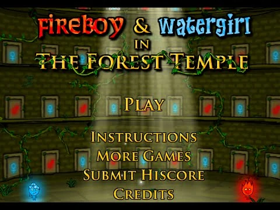
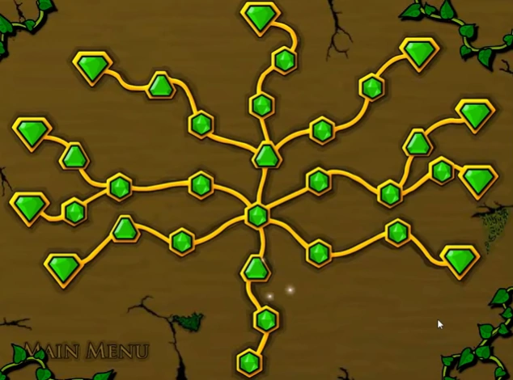

| Főoldal |
|---|
| Erdei templom |
| Fény templom |
| Jég templom |
| Kristály templom |
| Kvíz oldal |
| Kontakt oldal |
A Fireboy és Watergirl in The Forest Temple a sorozat első játéka.
A megjelenés dátuma 2009. november 19.
A főmenü:

32 szint van, amelyek 17 normál szintből, és 6 alap szintből és 9 zöld gyémánt szintből állnak. Normál szinten különféle rejtvényeket kell megoldani, mint például karok, tolókarok, dobozok stb., és gyémántokat kell gyűjteni, bár nem szükséges a szint teljesítéséhez, ez növeli az értékelést a végén. Az egyidejűleg tervezett szinteken mindkét karaktert egyszerre, szimmetrikusan kell mozgatni. Általában nincs sok rejtvény, legtöbbször csak akadályok vannak. A zöld gyémánt szinten csak egy gyémánt van, amelyet össze kell gyűjteni a szint átjutásához, nagyjából ugyanaz, mint egy normál szint, de csak egy gyémánt szükséges a szint teljesítéséhez.
A szint kiválasztása:
